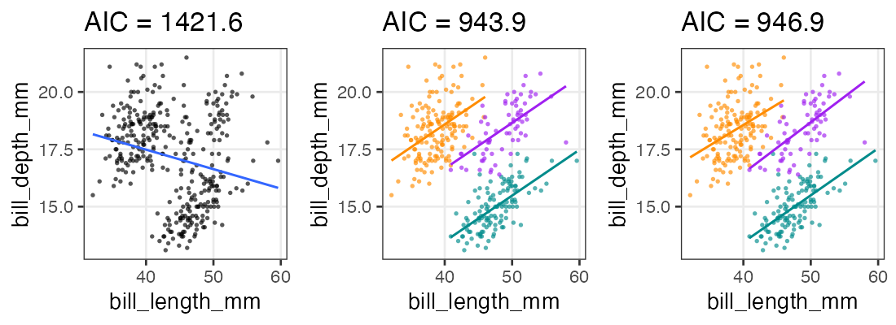

統計モデリング実習 2022 TMDU
(Graduate School of Life Sciences, Tohoku University)
- 導入、直線回帰
- 確率分布、擬似乱数生成
- 尤度、最尤推定
- 一般化線形モデル (GLM)
- 個体差、一般化線形混合モデル (GLMM)
- ベイズの定理、事後分布、MCMC
- StanでGLM
- 階層ベイズモデル (HBM)
前章で見た統計モデル
確率変数$X$はパラメータ$\theta$の確率分布$f$に“従う”: $X \sim f(\theta) $
e.g., ある植物が作る種の数$X$は平均値$\lambda$のポアソン分布に従う:
これを一般化線形モデル(GLM)として見ることもできる。
一般化線形モデル(GLM)として記述してみる
個体$i$の種子数$y_i$は平均値$\lambda_i$のポアソン分布に従う。
平均値$\lambda_i$は他のデータによらず$\beta_0$で一定。
種子数をY軸にして、式を2つに分けただけ…?
説明変数を含むモデルを見ればご利益が分かるかも。
説明変数が1つある一般化線形モデル
個体$i$の種子数$y_i$は平均値$\lambda_i$のポアソン分布に従う。
平均値の対数$\log(\lambda_i)$はその個体の大きさ$x_i$に比例する。


この場合は単回帰。説明変数が複数あると重回帰。
複数の説明変数を同時に扱う重回帰
\[\begin{split} y_i &\sim \text{Poisson}(\lambda_i) \\ \log(\lambda_i) &= \beta_0 + \beta_1 x_{1i} + \beta_2 x_{2i} + \ldots \end{split}\]
気温も湿度も高いほどビールが売れる架空データ:

ほかの確率分布とリンク関数を使う例を見てみよう。
ロジスティック回帰
- 確率分布: 二項分布
- リンク関数: $\text{logit}(p) = \log \frac {p} {1 - p}$
何かの成否に対する何かの因子の影響、とか
客10人中$y_i$人がビールを注文。
その日$i$の気温$x_i$によって割合が変化。
\[\begin{split} y_i &\sim \text{Binomial}(n,~p_i) \\ \text{logit}(p_i) &= \beta_0 + \beta_1 x_i \\ p_i &= \frac 1 {1 + e^{-(\beta_0 + \beta_1 x_i)}} \end{split}\]
ロジスティック関数↑

ロジスティック回帰 (狭義)
- 確率分布: ベルヌーイ分布 ($n = 1$ の二項分布)
- リンク関数: $\text{logit}(p) = \log \frac {p} {1 - p}$
何かの成否に対する何かの因子の影響、とか
風が吹けば桶屋が儲かる。
\[\begin{split} y_i &\sim \text{Bernoulli}(p_i) \\ &= \text{Binomial}(1,~p_i) \\ \text{logit}(p_i) &= \beta_0 + \beta_1 x_i \\ p_i &= \frac 1 {1 + e^{-(\beta_0 + \beta_1 x_i)}} \end{split}\]
ロジスティック関数↑
一般線形モデル (“化”無し) はGLMの一種
- 確率分布: 正規分布
- リンク関数: 恒等関数(なにもせずそのまま)
\[\begin{split} y_i &\sim \mathcal{N}(\mu_i,~\sigma^2) \\ \text{identity}(\mu_i) &= \beta_0 + \beta_1 x_i \end{split}\]
最小二乗法の直線あてはめと結果的に同じになる。
単回帰・重回帰と言ったとき一般線形モデルを前提とする人もいる。
分散分析 (Analysis of variance, ANOVA) as GLM
質的な説明変数を持つ正規分布・恒等リンクのGLM、と解釈可能。
指示変数 (0 or 1) に変換してから重回帰する。
| 天気 | → | $x_1$ ☀️ 晴れ | $x_2$ ☔️ 雨 |
|---|---|---|---|
| ☁️ くもり | 0 | 0 | |
| ☀️ 晴れ | 1 | 0 | |
| ☔️ 雨 | 0 | 1 |
\[\begin{split} y_i &\sim \mathcal{N}(\mu_i,\sigma^2) \\ \mu_i &= \beta_0 + \beta_1 x_{1i} + \beta_2 x_{2i} \end{split}\]

くもり☁️ $\beta_0$ を基準に、晴れの効果☀️ $\beta_1$ と雨の効果☔️ $\beta_2$ が求まる。
GLMなら確率分布・リンク関数を変えてもっと柔軟にモデリングできる。
共分散分析 (Analysis of covariance, ANCOVA) as GLM
質的変数と量的変数を両方含むGLM、と解釈可能。
正規分布・等分散・恒等リンクなどが仮定される。
| 天気 | → | $x_1$ ☀️ 晴れ | $x_2$ ☔️ 雨 |
|---|---|---|---|
| ☁️ くもり | 0 | 0 | |
| ☀️ 晴れ | 1 | 0 | |
| ☔️ 雨 | 0 | 1 |
\[\begin{split} y_i &\sim \mathcal{N}(\mu_i,\sigma^2) \\ \mu_i &= \beta_0 + \beta_1 x_{1i} + \beta_2 x_{2i} + \beta_3 x_{3i} \end{split}\]

GLMなら確率分布・リンク関数を変えてもっと柔軟にモデリングできる。
交互作用
ある説明変数の効果が、別の説明変数によって異なる。
e.g., ビール売上の温度依存性が天気によって異なる。
| 天気 | $x_1$ |
|---|---|
| ☀️ 晴れ | 1 |
| ☔️ 雨 | 0 |
\[\begin{split} y_i &\sim \mathcal{N}(\mu_i,\sigma^2) \\ \mu_i &= \beta_0 + \beta_1 x_{1i} + \beta_2 x_{2i} + \beta_{1,2} x_{1i} x_{2i} \end{split}\]
雨の日は $x_{1i} = 0$ のため $\beta_0,~\beta_2$ の項だけ。
晴れの日はそれに加えて $\beta_1,~\beta_{1,2}$ の項も。
解釈が一気に難しくなるのでむやみに使わない。
一般化線形モデル(GLM)ふりかえり
確率分布・リンク関数を変えて柔軟にモデリングできる。
特定の組み合わせには名前がある。
| 名前 | 確率分布 | リンク関数 | 説明変数 |
|---|---|---|---|
| ポアソン回帰 | ポアソン分布 | log | |
| ロジスティック回帰 | 二項分布 | logit | |
| 一般線形回帰 | 正規分布 | 恒等 | |
| 分散分析 | 正規分布 | 恒等 | 質的変数 |
| 共分散分析 | 正規分布 | 恒等 | 質的変数+量的変数 |
確率分布については前章を参照。
リンク関数をもう少しだけ掘り下げたい。
リンク関数
統計モデリングにおいて「まっすぐ以外も表現できる」意味
- $\text{identity}(\mu_i)$
- $\mu_i = \beta_0 + \beta_1 x_{1i} + \beta_2 x_{2i} + \ldots$
- 説明変数の効果が足し算的に働く。
- $\log(\lambda_i)$
- $\lambda_i = e^{\beta_0 + \beta_1 x_{1i} + \beta_2 x_{2i} + \ldots} = e^{\beta_0} \times e^{\beta_1 x_{1i}} \times e^{\beta_2 x_{2i}} \times \ldots$
- 説明変数の効果が掛け算的に働く。
e.g., $\Delta x_1$ 増えると $e^{\beta_1 \Delta x_{1}}$ 倍になる - $\text{logit}(p_i)$
- $p_i = \frac 1 {1 + e^{-(\beta_0 + \beta_1 x_i + \ldots)}} $ (ロジスティック関数)
- 説明変数の効果が頭打ちになる。
e.g., $\lim_{x \to -\infty} p = 0;~\lim_{x \to \infty} p = 1$
ほかに probit, inverse, sqrt, etc.
RにおけるGLMのやりかた
直線回帰のときの lm とほぼ同じ。
formula = weight ~ height
fit = glm(formula, data = df_weight)
coef(fit)
(Intercept) height
-69.85222 78.63444
デフォルトは正規分布・恒等リンクで lm と同じ結果。
family= オプションで確率分布とリンク関数を明示的に指定:
glm(formula, family = gaussian(link = identity), data = mydata)
glm(formula, family = poisson(link = log), data = mydata)
glm(formula, family = binomial(link = logit), data = mydata)
See ?family for more details.
🔰 とにかくGLMを使ってみる練習
とりあえず当てはめと作図だけ。
結果の解釈やモデルの評価はこの後。
n = 50
df_weight = tibble::tibble(
height = rnorm(n, 1.70, 0.05),
bmi = rnorm(n, 22, 1),
weight = bmi * (height**2)
) |>
print()
height bmi weight
1 1.718019 21.55500 63.62151
2 1.782862 22.83775 72.59199
3 1.617464 22.43569 58.69604
4 1.678291 23.37245 65.83231
--
47 1.762930 21.78337 67.70106
48 1.744133 21.47257 65.31960
49 1.730495 19.72866 59.07966
50 1.676496 22.85824 64.24627
🔰 ポアソン回帰
n = 300L
a = 3
b = -3
df_seeds = tibble::tibble(
body_mass = runif(n, 0.4, 1.7),
num_seeds = rpois(n, exp(a * body_mass + b))
) |>
print()
body_mass num_seeds
1 0.9185923 1
2 0.5154446 0
3 1.3362802 4
4 1.6858125 11
--
297 1.3407210 3
298 1.3357421 1
299 0.8928759 0
300 0.4583795 0
🔰 重回帰
n = 200L
true_coef = c(3, 0.05, 0.006)
df_beer = tibble::tibble(
temperature = runif(n, 8, 32),
humidity = runif(n, 20, 80),
beer_sales = rpois(n, exp(true_coef[1] + true_coef[2] * temperature + true_coef[3] * humidity))
) |>
print()
temperature humidity beer_sales
1 17.57401 54.68339 67
2 10.13129 67.34727 55
3 25.28517 40.93855 104
4 31.73808 32.14308 113
--
197 26.28116 41.89173 105
198 23.53532 73.12257 113
199 13.87494 41.92560 51
200 31.60519 61.47984 140
🔰 ロジスティック回帰
sigmoid = function(x, gain = 1) {1 / (1 + exp(-gain * x))}
nrep = 200L
n = 10L
df_logistic = tibble::tibble(
x = runif(nrep, -10, 35),
logit_p = -3 + 0.3 * x,
p = sigmoid(logit_p),
y = rbinom(nrep, n, p),
response = matrix(c(y, n - y), ncol = 2)
) |>
print()
x logit_p p y response[,1] [,2]
1 7.951271 -0.6146188 0.35100632 4 4 6
2 -6.003840 -4.8011520 0.00815325 0 0 10
3 22.409698 3.7229095 0.97640654 10 10 0
4 34.508895 7.3526686 0.99935953 10 10 0
--
197 24.277180 4.2831541 0.98638875 10 10 0
198 19.128721 2.7386162 0.93926720 8 8 2
199 1.015520 -2.6953441 0.06324865 0 0 10
200 34.259733 7.2779199 0.99930986 10 10 0
🔰 共分散分析: GLM with 質的変数 + 量的変数
まずはweatherだけで分散分析、次にtemperatureを入れて共分散分析。
n = 200L
b = c(70, 3, 20, -20) # true coef
weather_levels = c("sunny", "cloudy", "rainy")
df_ancova = tibble::tibble(
temperature = runif(n, 8, 32),
weather = factor(sample(weather_levels, n, TRUE), levels = weather_levels)
) |>
dplyr::mutate(name = weather, value = 1L) |>
tidyr::pivot_wider(values_fill = 0L) |>
dplyr::select(!cloudy) |>
dplyr::mutate(mu = b[1] + b[2] * temperature + b[3] * sunny + b[4] * rainy) |>
dplyr::mutate(beer_sales = rnorm(n, mu, 10)
) |>
print()
temperature weather sunny rainy mu beer_sales
1 23.377217 cloudy 0 0 140.13165 129.36288
2 26.043088 cloudy 0 0 148.12926 138.26966
3 30.830351 cloudy 0 0 162.49105 141.46190
4 15.022311 cloudy 0 0 115.06693 108.18593
--
197 8.277514 cloudy 0 0 94.83254 74.38321
198 28.675228 rainy 0 1 136.02568 140.34777
199 27.310881 rainy 0 1 131.93264 122.31587
200 24.064285 sunny 1 0 162.19286 144.89368
🔰 交互作用
n = 200L
b = c(70, 3, 100, -2) # true coef
weather_levels = c("sunny", "rainy")
df_interact = tibble::tibble(
temperature = runif(n, 8, 32),
weather = factor(sample(weather_levels, n, TRUE), levels = weather_levels)
) |>
dplyr::mutate(name = weather, value = 1L) |>
tidyr::pivot_wider(values_fill = 0L) |>
dplyr::mutate(mu = b[1] * sunny + b[2] * temperature + b[3] * rainy + b[4] * temperature * rainy) |>
dplyr::mutate(beer_sales = rnorm(n, mu, 10)) |>
print()
temperature weather rainy sunny mu beer_sales
1 23.377217 rainy 1 0 123.37722 116.2995
2 26.043088 rainy 1 0 126.04309 133.9018
3 30.830351 rainy 1 0 130.83035 130.6798
4 15.022311 rainy 1 0 115.02231 117.5620
--
197 8.277514 sunny 0 1 94.83254 104.2573
198 28.675228 sunny 0 1 156.02568 155.3134
199 27.310881 rainy 1 0 127.31088 131.0297
200 24.064285 sunny 0 1 142.19286 142.8241
データはひとつ、モデルはたくさん
どう選ぶ？
- メカニズム的に納得できるものを選ぶ
- ポアソン過程のカウントならポアソン分布、間隔ならガンマ分布
- n回中k回のように割合的なカウントなら二項分布
- データを可視化してみて、それっぽい形・性質のものを選ぶ
- 左右対称のひと山ならとりあえず正規分布
- 負の値を取らないならガンマ分布
- 直線的か、指数関数的か、頭打ちか、などなど
客観的な指標もほしい。
モデルの尤もらしさといえば…
尤度 (likelihood)
あるモデル$M$の下でそのデータ$D$が観察される確率:
$\text{Prob}(D \mid M)$
データ$D$を固定し、モデル$M$の関数とみなしたものが尤度関数:
$L(M \mid D)$
モデルの構造も固定してパラメータ$\theta$だけ動かす場合はこう書く:
$L(\theta \mid D)$ or $L(\theta)$
対数尤度 $\log L$ の形にしたほうがいろいろ便利。
各モデルで最適なパラメータを探して、比較:
$\log L^* (M_1) \text{ vs. } \log L^* (M_2) \text{ vs. } \log L^* (M_3) \ldots$
broom::glance(fit)
null.deviance df.null logLik AIC BIC deviance df.residual nobs
1 1305.043 49 -124.9298 255.8597 261.5957 433.2606 48 50
たしかに尤度はあてはまりの良さを表してそう
この場合は直線回帰よりもポアソン回帰が良さそう:

この調子で、より尤度の高いモデルを探していけばいいだろうか？
あてはまりが良ければいいってもんでもない
- 過剰適合 / 過学習 / overfitting
- パラメータを増やせば現データへの適合度・尤度を高くできるが、
予測・理解の役には立たなくなる。
帰無モデル: 説明変数なし。切片のみ。
飽和モデル: データ点の数 ≤ パラメータの数。“データ読み上げ”的モデル
無駄な説明変数を加えても尤度は上がる
ある植物が作る種の数 $y$ は個体のサイズ $x$ に応じて増える。
観察時に着てた服の色 $x_2$ を追加すると尤度が上がる……?
AIC: 赤池情報量基準
\[\begin{split} \text{AIC} = -2 (\log L^* - k) = -2 \log L^* + 2k \end{split}\]
- AICが小さいほど予測精度の良いモデル。
- 尤度は上げたい。
- パラメータ数 $k$ が増えるとペナルティ。
- どのデータに対する当てはまりを目指すかという観点
- 「手元のデータ」に対する対数尤度は $\log L^*$
- 「真のメカニズムから出てくる未来のデータ」に対する
平均対数尤度の推定量は $(\log L^* - k)$
(Kullback–Leibler情報量を使って導出するらしい)
- 「手元のデータ」に対する対数尤度は $\log L^*$
broom::glance(fit)
null.deviance df.null logLik AIC BIC deviance df.residual nobs
1 1305.043 49 -124.9298 255.8597 261.5957 433.2606 48 50
無駄な説明変数の追加でAIC増加
ある植物が作る種の数 $y$ は個体のサイズ $x$ に応じて増える。
観察時に着てた服の色 $x_2$ を追加したモデルはAICが増加。
ほかの情報量基準
モデル選択の心構え
「正しい」ものを選べるわけではない。
予測・理解に useful なものを何らかの基準で選ぶだけ。
All models are wrong, but some are useful. — George E. P. Box

現実的な注意点・悩みどころ
- 多重共線性(multicollinearity):
- 説明変数同士が強い相関関係にある
- 変数変換:
- 気安くやるべきじゃないけど、対数変換などしばしば有用
- 割り算した値は危険
- 交互作用を入れると解釈が難しくなる。
一般化線形モデル座学まとめ
- 何はともあれ散布図を描く
- 適切な確率分布・リンク関数・説明変数を考える
- パラメータを最尤推定する
- 尤度は「手元のデータへのあてはまり」
- モデルを比較するときは情報量基準を参考にする
penguinsデータセット
https://allisonhorst.github.io/palmerpenguins/

install.packages("palmerpenguins")
library(palmerpenguins)
penguins_colors = c(Adelie = "darkorange", Chinstrap = "purple", Gentoo = "cyan4")
print(penguins)
penguinsデータセット
https://allisonhorst.github.io/palmerpenguins/
species island bill_length_mm bill_depth_mm flipper_length_mm body_mass_g sex year
1 Adelie Torgersen 39.1 18.7 181 3750 male 2007
2 Adelie Torgersen 39.5 17.4 186 3800 female 2007
3 Adelie Torgersen 40.3 18.0 195 3250 female 2007
4 Adelie Torgersen NA NA NA NA NA 2007
--
341 Chinstrap Dream 43.5 18.1 202 3400 female 2009
342 Chinstrap Dream 49.6 18.2 193 3775 male 2009
343 Chinstrap Dream 50.8 19.0 210 4100 male 2009
344 Chinstrap Dream 50.2 18.7 198 3775 female 2009
🔰 penguinsでGLMの練習
次の課題を解いてみよう。
(次ページ以降に解答。まずは自力で。)
body_mass_gを横軸、flipper_length_mmを縦軸に、まず作図。- 単回帰して、切片と傾きを求める。そして作図。
speciesで色分けして作図。speciesも説明変数に加えて重回帰し、切片と傾きを求める。そして作図。- 余裕があれば、クチバシの長さと深さを縦横軸にして同様の解析。
単回帰の練習: 1. まず作図
どうやら、重いペンギンほど翼長も長い。
p_penweight = ggplot(penguins) +
aes(body_mass_g, flipper_length_mm) +
geom_point(shape = 16, alpha = 0.66) +
theme_bw(base_size = 20) +
theme(panel.grid.minor = element_blank())
p_penweight
単回帰の練習: 2. モデル作成、フィッティング
とりあえずデフォルトの正規分布・恒等リンク。 $y = 136.7 + 0.0153 x$
fit1 = glm(flipper_length_mm ~ body_mass_g, data = penguins)
broom::tidy(fit1)
term estimate std.error statistic p.value
1 (Intercept) 136.72955927 1.996835406 68.47312 5.712947e-201
2 body_mass_g 0.01527592 0.000466836 32.72223 4.370681e-107
broom::glance(fit1)
null.deviance df.null logLik AIC BIC deviance df.residual nobs
1 67426.54 341 -1145.518 2297.035 2308.54 16250.3 340 342
単回帰の練習: 3. フィッティング結果を作図
結果とデータから予測値を作って回帰線を引く。
added1 = modelr::add_predictions(penguins, fit1, type = "response")
p1 = p_penweight +
geom_line(aes(y = pred), data = added1, linewidth = 1, color = "#3366ff")
p1
重回帰の練習: 1. まず作図
種によって色分けしてみると、傾向の違いが見える。
p_penweight_color = p_penweight + aes(color = species) +
scale_color_manual(values = penguins_colors)
p_penweight_color
重回帰の練習: 2. モデル作成、フィッティング
Adelieを基準に、ChinstrapとGentooはそれより長め。
体重の効果は単回帰のとき(0.0153)より小さい。
fit2 = glm(flipper_length_mm ~ body_mass_g + species, data = penguins)
broom::tidy(fit2)
term estimate std.error statistic p.value
1 (Intercept) 1.588603e+02 2.3865766963 66.564071 2.450113e-196
2 body_mass_g 8.402113e-03 0.0006338976 13.254686 1.401600e-32
3 speciesChinstrap 5.597440e+00 0.7882166229 7.101398 7.334777e-12
4 speciesGentoo 1.567747e+01 1.0906590679 14.374308 6.800823e-37
broom::glance(fit2)
null.deviance df.null logLik AIC BIC deviance df.residual nobs
1 67426.54 341 -1059.718 2129.437 2148.611 9839.073 338 342
重回帰の練習: 3. フィッティング結果を作図
added2 = modelr::add_predictions(penguins, fit2, type = "response")
p2 = p_penweight_color +
geom_line(aes(y = pred), data = added2, linewidth = 1)
p2
傾きも種によって違うかも。交互作用を入れてみたい。
交互作用の練習: モデル作成、フィッティング
Adelieを基準に、Chinstrapの傾きが結構違う。
切片の違いは解釈しにくくなった。
fit3 = glm(flipper_length_mm ~ body_mass_g * species, data = penguins)
broom::tidy(fit3)
term estimate std.error statistic p.value
1 (Intercept) 165.244812649 3.5508916651 46.536146 1.561669e-148
2 body_mass_g 0.006676867 0.0009522935 7.011354 1.301783e-11
3 speciesChinstrap -13.863939075 7.3012647809 -1.898841 5.844186e-02
4 speciesGentoo 6.059375933 6.0508813200 1.001404 3.173522e-01
5 body_mass_g:speciesChinstrap 0.005228197 0.0019486293 2.683013 7.657147e-03
6 body_mass_g:speciesGentoo 0.002362269 0.0013525781 1.746494 8.163897e-02
broom::glance(fit3)
null.deviance df.null logLik AIC BIC deviance df.residual nobs
1 67426.54 341 -1055.711 2125.422 2152.265 9611.166 336 342
交互作用の練習: フィッティング結果を作図
added3 = modelr::add_predictions(penguins, fit3, type = "response")
p3 = p_penweight_color +
geom_line(aes(y = pred), data = added3, linewidth = 1)
p3

ここまでの3つのモデルでどれがいいか？
AICで選ぶなら交互作用入り重回帰が良さそう。
labels = sprintf("AIC = %.1f", AIC(fit1, fit2, fit3)$AIC)
cowplot::plot_grid(p1 + labs(title = labels[1]),
p2 + labs(title = labels[2]) + theme(legend.position = "none"),
p3 + labs(title = labels[3]) + theme(legend.position = "none"), nrow = 1L)
余裕があったら追加の練習
🔰クチバシの長さと深さで同じ解析をやってみよう。
🔰余裕があったら性別や年なども説明変数に入れてみよう。
参考文献
- データ解析のための統計モデリング入門 久保拓弥 2012
- StanとRでベイズ統計モデリング 松浦健太郎 2016
- RとStanではじめる ベイズ統計モデリングによるデータ分析入門 馬場真哉 2019
- データ分析のための数理モデル入門 江崎貴裕 2020
- 分析者のためのデータ解釈学入門 江崎貴裕 2020
- 統計学を哲学する 大塚淳 2020